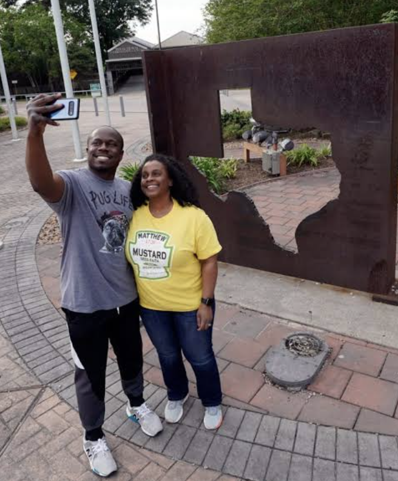

Alex & SarahVer detalhes →Entramos em contato com a China Attest para obter ajuda com a autenticação de diplomas para documentação de emprego. A equipe explicou claramente os requisitos e nos ajudou a entender as etapas envolvidas. Apreciamos a abordagem simpática e as atualizações oportunas. Ter alguém para nos orientar nos documentos facilitou muito tudo.
Avaliações de clientes.
Avaliações 41–46 de 46 · Página 6 de 6
ChloeVer detalhes →Precisava autenticar meu diploma e tinha várias dúvidas antes de começar. A China Attest foi acessível e explicou o que eu precisava preparar. Senti-me informado durante todo o processo e apreciei a comunicação rápida. Obrigado à equipe por toda a ajuda.
Robert & HelenVer detalhes →Precisávamos de assistência para preparar documentos acadêmicos para uma candidatura a emprego. A China Attest nos ajudou a organizar a documentação e entender os requisitos de verificação. A equipe respondeu pacientemente às nossas dúvidas e nos manteve informados. Ficamos satisfeitos com o apoio e a comunicação clara e direta.

James & OliviaVer detalhes →Estávamos fora da China quando precisamos de ajuda com a autenticação de diplomas. A China Attest explicou os procedimentos e quais documentos precisaríamos fornecer. Foi tranquilizador ter uma equipe que podíamos contatar a distância com dúvidas. Apreciamos o apoio profissional durante todo o processo.
SophieVer detalhes →Entrei em contato com a China Attest para obter ajuda com a documentação de verificação relacionada ao meu diploma. Explicaram os requisitos claramente e me ajudaram a esclarecer os detalhes. A equipe respondeu prontamente, foi prestativa e me manteve informado conforme o processo avançava. Fico feliz por ter contado com a orientação deles.
AbigailVer detalhes →Precisei de um certificado de antecedentes criminais chinês depois de morar em mais de uma cidade na China. A China Attest me ajudou a organizar minhas informações de residência e a entender quais documentos preparar. Eu estava providenciando tudo do exterior, então as respostas claras e as atualizações deles ajudaram muito. Obrigado por facilitar o processo.